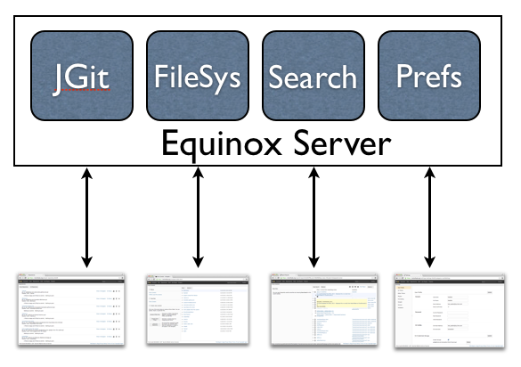
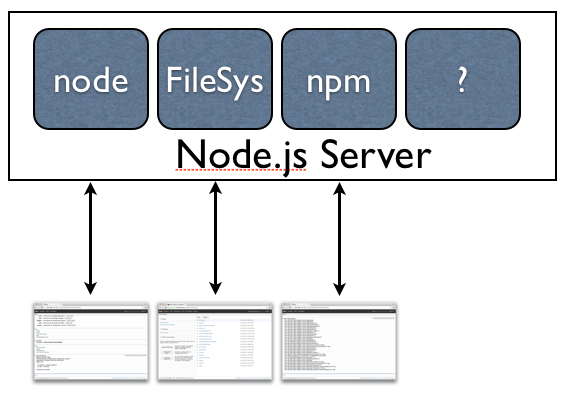
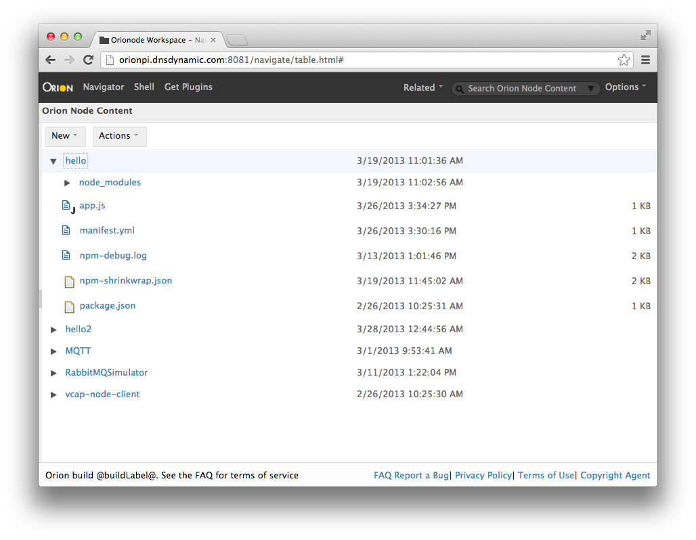
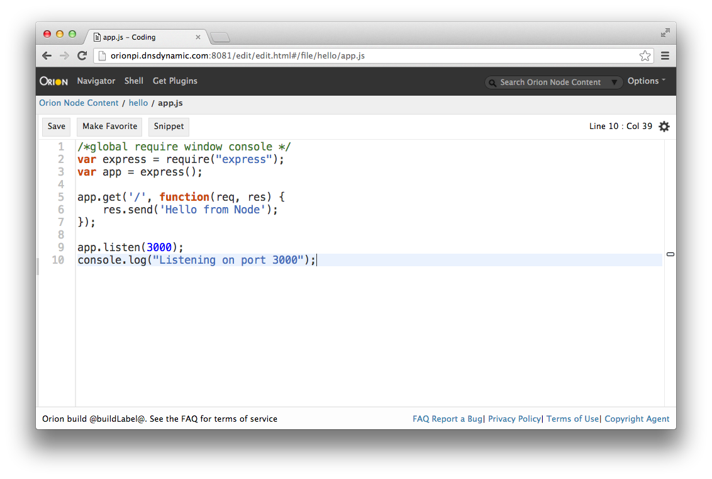
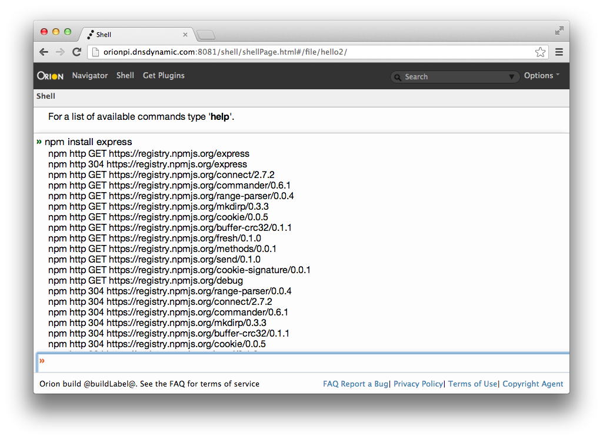
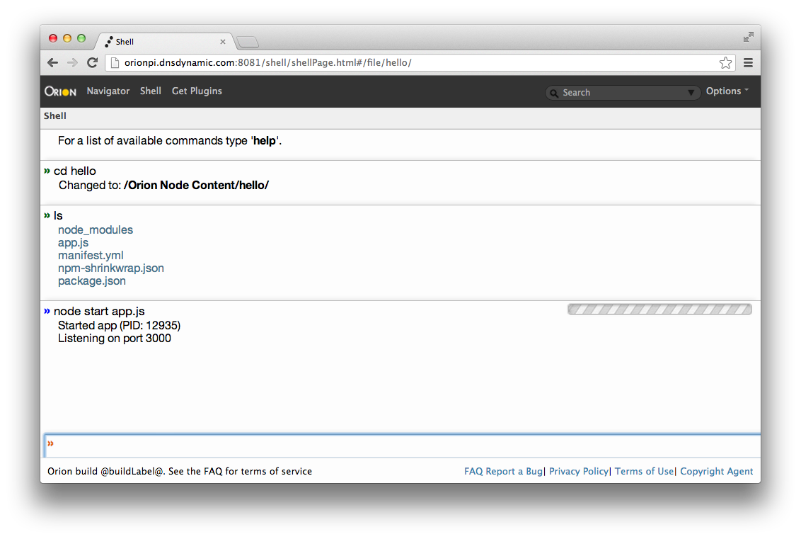

Orion on Node.js
EclipseCon Boston - March, 2013

kenwalker (github) / @kwalker / @orionhub
Orion Lead and Orion Dev Lead at IBM Canada
Clone this talk into OrionHub.org from GitHub
npm install orion
npm start orion
25 minutes for questions...
What is Node.js?
Node.js is a platform built on Chrome's JavaScript runtime for easily building fast, scalable network applications. Node.js uses an event-driven, non-blocking I/O model that makes it lightweight and efficient, perfect for data-intensive real-time applications that run across distributed devices.
What is Node.js?
... a platform, V8, fast, scalable, event-driven, lightweight...
lightweight?
node-v0.10.1-darwin-x64.tar.gz - ~4 MB
Java 7 Mac OS X x64 - ~143 MB
APIs in Node.js
Buffers, Child Processes, Clustering, Crypto, Events, FileSystem, HTTP, HTTPS, Net, OS, Processes, Streams, Timers, SSL, UDP, ZLib, others
What is NPM?
- Node Package Manager
- Manages dependencies for an application
- Can install, remove and libraries
- Can invoke and run Applications
A simple Express.js Server
/*global require window console */
var express = require("express");
var app = express();
app.get('/', function(req, res) {
res.send('Hello from Node');
});
app.listen(3000);
Lets tie Node.js to Orion
Open Source Platform for Cloud Based Development
- Orion's client is JavaScript, CSS and HTML
- Simply served up to the browser...statically
- Consists of pages and plugins within pages
- Plugins then rely on RESTful APIs to the server
Here are some of our Java Server REST APIs
Matched to Orion Plug-ins calling these APIs
Our Node implementation is missing some capabilities
- The Orion Node server currently has no Git support, or an indexing search system, nor preferences
- However, we've added some functionality to support Node development such as node, npm and debugging
The Node.js REST APIs
Matched to Orion Plug-ins
So, we need some dependencies
- Connect - extensible HTTP server framework
- sax - An evented streaming XML parser
- socket.io - Cross-browser easy WebSocket-like API
- deferred-fs - Provides a promise-based API for Node's filesystem APIs (written by Orion team)
- node-inspector - Web Inspector based nodeJS debugger
- npm - node package manager (built-in to Node)
Handle requests using Connect.js
// API handlers
.use(orionFile({
root: '/file',
workspaceDir: workspaceDir
}))
.use(orionWorkspace({
root: '/workspace',
fileRoot: '/file',
workspaceDir: workspaceDir
}))
.use(orionNode({
appContext: appContext,
root: '/node'
}))
.listen(options.port);
So you get a Navigator on our workspace
Editor on a Node application
NPM support to install packages
Node support to run applications
Does searching files work?
The default file service implementation supports a crawling search engine
That does mean searches are slower however
Do plugins work?
Plugins are all client side, in the browser so they do work
Since we have no preference store, they are not remembered for you however
Demo
How to install Orion on Node.js?
npm install orion
edit orion.conf to set a workspace directory
workspace=/home/pi/Workspace/
then start the Orion package using npm
npm start orion
You can extend it
Your application can use orion as a connect module
// Make sure that we can .use() the orion server as a connect module.
it('exports #createServer', function(done) {
app.use(orion({
workspaceDir: WORKSPACE
}))
.request()
.get('/file/project/fizz.txt')
.expect(200, 'hello world', done);
});
This is our test to verify it works
You can work on and contribute to it
- Orion Node Getting Started Guide
- Orion Node Developing
- Our Node tests suite is written in Mocha
Write shell extensions for Orion on Node is a good starting point (Ruby? Php? Lua?)
Find out more
Read our blog at Planet Orion
Check out the Orion BUZZ
Lots of information in the Orion Wiki
Follow @OrionHub on Twitter
Create an account and try it at OrionHub
kenwalker (github) / @kwalker / @orionhub
Orion Lead and Orion Dev Lead at IBM Canada
Clone this talk into OrionHub.org from GitHub